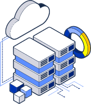
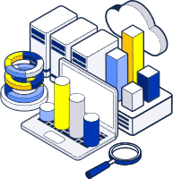

Solution
오픈소스 기반 빅데이터 플랫폼 YT-BDP, 분석·AI 플랫폼 YT-DA, 지능형 심사 플랫폼 YT-SEP까지 — 검증된 자체 Solution 3종을 제공합니다.
YT-BDP · BigData Platform
수집·저장·처리·모니터링을 하나로 통합한 오픈소스 기반 빅데이터 플랫폼입니다. 상용 빅데이터 플랫폼을 저비용·단계적으로 전환(윈백)하여 벤더 종속 없이 유연성과 확장성을 확보합니다.

- Hadoop 에코시스템 기반 분산 저장·처리 (HDFS · YARN · Spark)
- Kafka·NiFi 수집·연계, Prometheus·Grafana 실시간 모니터링
- 클라우드 / 온프레미스 · G-클라우드 유연 대응, 운영 자동화 지원
상용 빅데이터 플랫폼 전환
Before/After 비교와 검증된 4단계 전환 절차로, 서비스 중단과 리스크를 최소화하며 오픈소스 기반으로 전환합니다.
상용 플랫폼의 한계
오픈소스 기반 구축
| 저장 | Hadoop HDFS |
|---|---|
| 리소스 관리 | Hadoop YARN |
| 처리 | Spark, Hive, MapReduce |
| 분석·조회 | Trino(Presto), Spark SQL, Zeppelin |
| AI · ML | Python(Anaconda), PyTorch·TensorFlow |
| 수집·연계 | Kafka, NiFi |
| 모니터링 | Prometheus, Grafana |
빅데이터 통합관리 시스템
시스템 사용 현황과 데이터 적재를 실시간으로 모니터링하고, 데이터 추출까지 하나의 화면에서 통합 관리합니다.
YT-DA · Data Analytics & AI
실시간 분석·시각화와 AI 모델 적용을 지원하는 분석 플랫폼입니다. YT-BDP 위에서 정형·비정형 데이터를 통합 분석하고, OLAP 통계 분석부터 머신러닝, RAG 기반 생성형 AI 서비스까지 데이터 활용 전 주기를 지원합니다.

- 실시간 대시보드·차트 시각화 및 BI 도구(Power BI·Tableau) 연계
- 정형·비정형 데이터 통합 분석
- RAG 기반 지식검색 및 생성형 AI 서비스 확장
YTINS만의 차별화
YT-SEP · Smart Evaluation Platform
YT-SEP(Smart Evaluation Platform)는 온라인·오프라인 심사 시스템을 통합·연계하여 심사의 객관성과 공정성을 확보하고, 심사위원 모집부터 교섭·평가·집계까지 심사평가 업무 전 과정을 All-in-ONE으로 자동화하는 지능형 심사 플랫폼입니다. LH(한국토지주택공사)의 심사 프로세스에 특화하여 구축·운영·고도화를 수행 중입니다.
스마트 심사 시스템 구성도
ACS의 심사위원 자동교섭과 AAS의 심사위원 모집 조건이 REST API로 연동되며, 두 시스템이 하나의 통합 DB를 공유합니다.
- 심사위원 자동교섭
- 교섭내용 TTS 전송
- Out Call 프로그램
- 교섭 결과 관리
- 심사위원 모집 조건
- 기술심사 평가 집계
- 시스템 관리
- 평가 사유서
- 비대면 평가
- BODA SW
- OCR 안면인증
- 본인인증
- DB 암호화
- 개인정보 암호화
- 민간 클라우드 연계 파트너십 보유
- 공공 보안존 특화 구축
대표 레퍼런스 — LH 온라인심사 시스템
한국토지주택공사(LH)의 심사 프로세스에 특화하여 스마트심사 시스템을 구축·운영하고 있으며, 지속적인 고도화를 통해 심사 품질과 처리 효율을 높이고 있습니다.